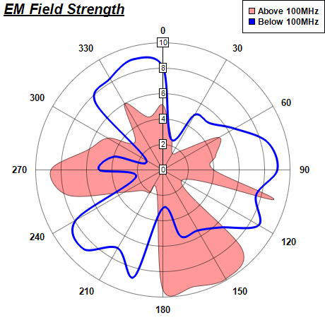

This example demonstrates polar spline line and polar spline area.
The polar spline line is created using PolarChart.addSplineLineLayer. The polar spline area is created using PolarChart.addSplineAreaLayer.
ChartDirector 7.1 (C++ Edition)
Polar Spline Chart

Source Code Listing
#include "chartdir.h"
int main(int argc, char *argv[])
{
// The data for the chart
double data0[] = {5.1, 2.6, 1.5, 2.2, 5.1, 4.3, 4.0, 9.0, 1.7, 8.8, 9.9, 9.5, 9.4, 1.8, 2.1,
2.3, 3.5, 7.7, 8.8, 6.1, 5.0, 3.1, 6.0, 4.3};
const int data0_size = (int)(sizeof(data0)/sizeof(*data0));
double angles0[] = {0, 15, 30, 45, 60, 75, 90, 105, 120, 135, 150, 165, 180, 195, 210, 225, 240,
255, 270, 285, 300, 315, 330, 345};
const int angles0_size = (int)(sizeof(angles0)/sizeof(*angles0));
double data1[] = {8.1, 2.5, 5, 5.2, 6.5, 8.5, 9, 7.6, 8.7, 6.4, 5.5, 5.4, 3.0, 8.7, 7.1, 8.8,
7.9, 2.2, 5.0, 4.0, 1.5, 7.5, 8.3, 9.0};
const int data1_size = (int)(sizeof(data1)/sizeof(*data1));
double angles1[] = {0, 15, 30, 45, 60, 75, 90, 105, 120, 135, 150, 165, 180, 195, 210, 225, 240,
255, 270, 285, 300, 315, 330, 345};
const int angles1_size = (int)(sizeof(angles1)/sizeof(*angles1));
// Create a PolarChart object of size 460 x 460 pixels
PolarChart* c = new PolarChart(460, 460);
// Add a title to the chart at the top left corner using 15pt Arial Bold Italic font
c->addTitle(Chart::TopLeft, "<*underline=2*>EM Field Strength", "Arial Bold Italic", 15);
// Set center of plot area at (230, 240) with radius 180 pixels
c->setPlotArea(230, 240, 180);
// Set the grid style to circular grid
c->setGridStyle(false);
// Add a legend box at the top right corner of the chart using 9pt Arial Bold font
c->addLegend(459, 0, true, "Arial Bold", 9)->setAlignment(Chart::TopRight);
// Set angular axis as 0 - 360, with a spoke every 30 units
c->angularAxis()->setLinearScale(0, 360, 30);
// Add a red (0xff9999) spline area layer to the chart using (data0, angles0)
c->addSplineAreaLayer(DoubleArray(data0, data0_size), 0xff9999, "Above 100MHz")->setAngles(
DoubleArray(angles0, angles0_size));
// Add a blue (0xff) spline line layer to the chart using (data1, angle1)
PolarSplineLineLayer* layer1 = c->addSplineLineLayer(DoubleArray(data1, data1_size), 0x0000ff,
"Below 100MHz");
layer1->setAngles(DoubleArray(angles1, angles1_size));
// Set the line width to 3 pixels
layer1->setLineWidth(3);
// Output the chart
c->makeChart("polarspline.png");
//free up resources
delete c;
return 0;
}